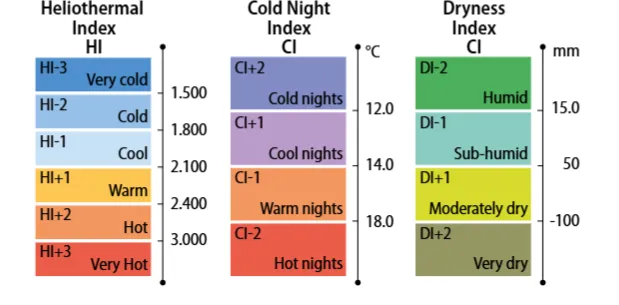

Chapter 2 · Terroir
I. Climatology
A large number of (bio)climatic indicators are used to determine the characteristics of wine-growing areas. Climatic conditions affect the terroir classification by repeating
Winemaker’s influence
themselves in the same form in time and space. The climatic factors must correspond in their presence to the vegetative growth and ripening cycle of the vine. Climatic conditions as a result of meteorological and geographical elements are currently in a state of change. New climatic factors and negative climate events that affect the vegetative cycle must be taken into account when zoning the viticultural area

Macroclimate is the climate of large areas whose classification features are the distribution of solar radiation, the absolute altitude of the terrain, the land-sea distribution and the general atmospheric circulation. Microclimate is the climate around the vine in a relevant parcel. Mesocli-
mate describes the climate in the area around the relevant parcel.
The Köppen climate classification divides climates into five main climate groups, with each group being divided based on patterns of seasonal precipitation and temperature. The five main groups are A (tropical), B (arid), C (temperate), D (continental), and E (polar). The climate groups relevant to Portugal are C and D, which are subdivided into: w = dry winter; f = no dry season; s = dry summer
Most of the world's premium wine production is in one of the climate categories in locations between the 35th parallel and 50th parallel in both the northern and southern hemispheres. In the case of Portugal (which lies between the 36th and 42nd parallel), the predominant climate group is C (temperate climate) with additional determinations:
Mediterranean climate areas have long growing seasons of moderate to warm temperatures, with little seasonal change and winter temperatures warmer than those of maritime and continental climates. Very little rainfall in the vegetative period and precipitation in the winter months and therefore in dryer regions, there is the need for irrigation.
Maritime climates, due to their proximity to large bodies of water have moderate temperatures and humidity, distinct seasonal changes, but not as drastic those in continental climates. In a few areas in Portugal, the climate is influenced by neighbourship with Spain: Continental
climate wine regions are basically located in the northern hemisphere. They are characterised by high seasonal changes, are mostly found inside on continents. Often with diurnal temperature variations, between the warm day and cold night. According to the macroclimate of the region, irrigation may be needed to supplement seasonal rainfall.
Relevant climatic factors
1. Temperature
It is clear that the temperature distribution covers the globe in parallel zones (thermal zoning). The outermost latitudes for viticulture are at 50° N and 35° S. The vine has a high demand for solar radiation and its photosynthetic capacity increases with the wavelength of the visible spectrum.
Climate Classes for the Viticultural Climate Indexes
and Class Interval – Geoviticultural MCC System
Climate Classification Class of Class Index viticultural Acronym interval climate
Hiliothermal, Very warm HI + 3 >3000 HI Warm HI + 2 >2400 ≤3000 Temperate war HI + 1 >2100 ≤2400 Temperate HI – 1 >1800 ≤2100 Cool HI – 2 >1500 ≤1800 Very cool HI – 3 ≤1500 Night cool Very cool nights CI + 2 ≤12 index, CI (°C) Cool nights CI + 1 >12 ≤14 Temperate Nights CI – 1 >12 ≤18 Warm nights CI – 2 >18 Dryness index, Very dry DI + 2 ≤–100 DI (mm) Moderately dry DI + 1 >–100 ≤–50 Sub-humid DI – 1 >–50 ≤–150 Sub-humid DI – 2 >–150
a) Measurement figures for temperature
(Adapted from CYTED (Programa Iberoamericano de Ciencia y Tecnología para el Desarrollo - Ibero-American Programme of Science and Technology for Development) Project: https://oa.upm.es/13203/
Huglin's Heliothermic Index (HI): Pierre Huglin developed a bioclimatic heat index for vineyards. The measurement is based on the temperature sum over the temperature threshold of 10 °C and calculated, taking into account the latitude effect, and then summed for all days from the beginning of April to the end of September. The heat sum index according to Huglin (1986) is related to different grape varieties which can be attributed to certain climati
cally equivalent regions.
The Cool Night Index (CI) is a viticultural climate index calculating the average daily minimum air temperature in the month of September in degrees Celsius (°C), considering latitude effect, that utilises the potential of a region in terms of secondary metabolites of wine quality by measuring the minimum night-time temperatures during the ripening of the grapes (as described by Tonietto and Carbonneau).
The Dryness Index (DI) is calculated over a six-month period from 1 April to 30 October considering soil water reserve, precipitation, the potential of evapotranspiration and radiation absorption to define the water deficit.
2. Water
Water availability depends on rainfall, soil retention capacity and irrigation, and other environmental events. Precipitation in the form of rain is of great importance for the development of the vine, because it decisively influences the quantity and quality of the grapes. Traditionally, supplementary irrigation is considered beneficial when the total water supply in the growing season is below 360 mm.
a) Dryness
Indicator of control-Index
• Evapotranspiration potential (ETP) occupies an important place in climate analysis, as it is the element that, together with precipitation, determines moisture deficit and surplus.
• Establish the "hydrological balance", we have to calculate the precipitation deficit as the sum of the positive differences between ETP and precipitation.
• Drought Index (DI): Gives an indication of the water availability in the soil, taking into account the drought level of an area during the same six months as for the calculation of HI. W = Wo + P – Tv – Es, where "W" is the estimated water reserve in the soil at the end of a given period, "Wo" is the initial water reserve in the soil usable by the roots, "P" is the amount of precipitation, "Tv" is the transpiration potential of the vine and "Es" is the direct evaporation of the soil (all data in mm).
b) Water retention capacity of the soil is the difference between the water content at field capacity (about –0.3 bars water potential) and wilting (about –15 bars potential). Soil water retention curves (SWRC) are defined as soil water content as a function of soil matric potential (Ψm).
c) Rainy season. There are pros and cons of rain during the life of a vine; rainfall at the vegetative growth stage requires increased fungicide use and complicates organic wine production but may avoid additional irrigation activity. New resistant (PIWI) grapevines are well on the way to solving this problem
3. Light/Insolation
Under warm conditions, the optimum is between 30,000 and 60,000 lux. Photosynthesis intensity and thus shoot growth are closely linked to the development of temperature, the maximum being 25–30 °C.
4. Air
a) Wind is important in two ways: firstly, because it can have a positive or negative effect on the other meteorological components (humidity, frost, diseases, etc.), and secondly, as a direct cause of the physical loss of shoots, leaves and inflorescences. The only effective protection is the construction of a windbreak, which requires effort in terms of construction and maintenance.
b) Relative humidity: Optimal photosynthesis occurs at a relative humidity of 60% to 70%. A lower humidity regime can lead to growth depression. Therefore, it is interesting to study periods with relative humidity below 40%. High humidity (above 80%) is of interest, although there is the risk of cryptogamic infections.
c)The presence of CO2 is expected to increase in future, with physiological effects on canopy.
d) The proximity of vineyards to sources of strong chemical evaporation, such as from factories or busy roads, can significantly influence wine aroma.
5. Risk of negative climatic/temperature events
Heat wave: The physiological damage caused to grapes by sunburn−observable primarily after veraison−has negative effects on their visual and organoleptic properties. The incidence of sunburn, which is most likely to increase in the decades ahead, is produced solely by too much photosynthetically active radiation (PAR)2.
Spring frost: A spring frost event leads to the intra-cellular formation of ice-crystals, causing cell death. The various forms of frost-management and protection include clonal selection for varieties with later budbreak, chemical delay; choice of training system, and double pruning.
Excessive winter frost (resulting in wood burn) can result in the death of the vine. This can be counteracted by piling soil on the stem and forming multiple stems.
Hail affects the plant in other ways depending on the vegetative cycle: it can destroy buds and shoots; later, the leaves and flowers are the most vulnerable organs or cause damage to the fruit set and leaf surface. Damage to the grape stalk disrupts the flow of juice and can lead to loss of or reduced quality.
In cases of extended drought, there is a risk of inundation with soil erosion when rainfall does occur.
2 Gambetta, Joanna M., Holzapfel, Bruno P., Stoll, Manfred, Friedel, 2021, "Sunburn in Grapes: A Review“ in Frontiers in Plant Science, 08 January 2021, Sec. Plant Abiotic Stress, Volume II – 2020. DOI: https://doi.org/10.3389/fpls.2020.604691
II. GEOLOGY – THE "MEDIUM" OF NATURE
In consideration of the“medium”, or site conditions, this section will describe important elements of the natural environment which are part of the core statement contained in the OIV definition of vitivinicultural terroir. Specifically, this means the geographical situation, the geological (lithology and nature of the rock) and the geomorphological (landscape, slope, exposure, orientation and elevation) elements, and how they influence the aromatic-flavour characteristics and colour of the wines. There is extensive material devoted to the geology-quality relationship and the importance of lithostratigraphy within the terroir itself in the literature (e.g., Pomerol, 1985; Milson, 1998; Fanet, 2002).
• The orientation of the slope in relation to the sun is a factor in determining the risk of frost, solar radiation and heat availability, soil type and water availability, and therefore influences the expression of the berries, the ripening process, the phenology of the grapes and ultimately, the quality of the wine.
• Elevation in general, has an influence on the vegetative period and the quality of the wine due to its effect on temperature. Various authors tend to classify wines from higher altitudes in a given area as being of better quality and associate wines from lower altitudes with a loss of complexity and sustainability. Varietal choice is of particular importance here.
• Topography. The Iberian Peninsula , situated between latitudes 36°00'08'' and 43°47'36'' north and between 3°19'05'' and 9°30'2" west (excluding the islands). The landscape relief is characterised by significant contrasts with regard to the geology of historical structures, intensified in effect by the interaction of Atlantic and Mediterranean climatic influences. Mountain ranges with pronounced relief alternate with medium heights and gentle elevations, separated by depressions that sometimes form deep valleys and are undoubtedly suitable for viticulture. To describe this relief, it is important to focus on two of its characteristics: its elevation and orientation. The average elevation of the Iberian Peninsula's relief is 650 m, exceeded only by Switzerland (France, including the Alps, only has an average elevation of 340 m). The cause of this high elevation is the central highlands in Spain (Meseta North and South), which have a slight slope of 3% down to the Atlantic all around. The topography is characterised by several mountain ranges and massifs that extend from Spain, with their extensions into Portugal, such as the Serra da Estrela.
• The topographical map of the peninsula with the distribution of the quality wine-growing areas shows that three quite different situations exist, which have led to significant regional and supra-regional peculiarities. The location, its orientation and the peculiarities of the orographic units separate the Atlantic from the Mediterranean influence, the zones of maritime influence from those with continental characteristics and higher elevations from lower ones.
• Lithology. Another element of the medium of essential importance for the distribution of the wine-growing areas is rock type, that is, the composition of the rocks in relation to the geological past. The Hercynian massif is located in the western part of the peninsula in the Serra de Estrela catchment area, and in terms of rock composition it consists mainly of older silicate-rich material, predominantly effusive rocks such as granite and metamorphic rocks such as schist, gneiss, mica and quartzite.
Comparing this scenario with the location of the quality wine areas, it can be seen that—regardless of the almost universal presence of vines—the most D.O. areas are located in the central core of the peninsula, on the northern and southern plateaus and their foothills. In addition, plantations exist in the basins of the main rivers and their main tributaries, with valleys of varying orientation and (solar) exposure, producing a variety of climatic, rock, landscape and soil characteristics. Vineyards are also found in certain coastal landscapes.